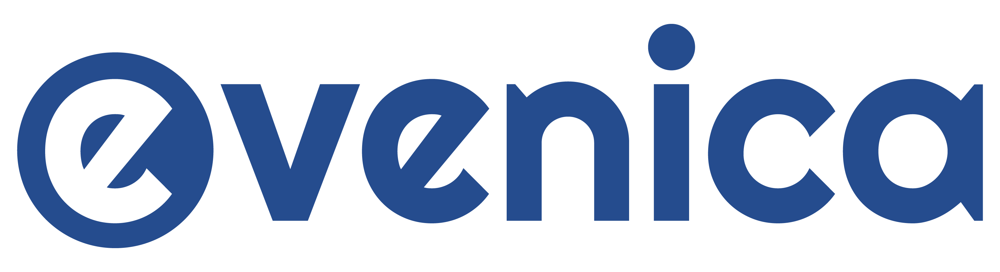

Hi! My name is Nicole (Nic) Echakowitz, and I'm a 3rd year Software Engineering student at the University of Guelph. During the F21 semester, I completed my first co-op term at Evenica Corp.. This website will elaborate on my time at Evenica, and outline the goals I set and accomplished throughout the semester.
Founded in 2014 and located in Burlington, ON, Evenica is a software vendor that develops e-commerce solutions for mid-sized to large enterprise clients.
Evenica utilizes Microsoft Dynamics 365, and is a Microsoft Gold Partner "recognized as the longest tenured and most experience e-commerce partner in the Microsoft ecosystem".
Where Evenica differs from other e-commerce solution companies is in their methodology. They provide a positive experience for clients with a personal approach to customer service, and deliver direct, quick, and unique e-commerce solutions for even the most complex e-commerce challenges.
At Evenica, I worked as a Web Application Developer in the Dynamics 365 team. My primary goal throughout the term was to build an e-commerce website for a client using HTML, CSS, JavaScript and React, and Dynamics 365 Commerce (D365). My role in the project consisted of coding and styling modules for the site using React and D365, and uploading products to the site using the D365 Site Builder application
Dynamics 365 Commerce is a mature framework that "enables the creation of digital experiences using built-in web authoring and development tools". D365 Commerce creates e-commerce websites through a Site Builder application, a web authoring toolset that allows users build templates, select themes, and select and configure modules without writing any code. D365 Commerce allows the creation of custom modules for the Site Builder through React development with the D365 Retail SDK, which includes the "code, code samples, templates, and tools that are required to extend or customize existing Commerce functionality".
I worked in a team under the mentorship of two senior software engineers, alongside 2 co-op students. As we worked through this project with the Agile methodology, an integral part of my job was maintaining constant communication with the members of the team. Every day, our team would meet to give updates on our progress and help each other with any issues that anyone had encountered. To further highlight the importance of communication to the project, our team was regularly recieving feedback from the client about changes to be made to aspects like styling. It was incredibly important that our team communicated with each other about designating tasks from the feedback, and improvements we feel can be made to each others work.
Working at Evenica was an entirely new experience for me! I'd never worked in software development professionaly, nor had I used Microsoft Dynamics 365 or even worked with e-commerce before. As such, at the beginning of the semester, I identified 3 goals that would help me to track my progress and learnings throughout the term.
As previously mentioned, Microsoft Dynamics 365 (D365) is the core of Evenica's development process -- and I was completely unfamiliar with it. Thanks to comprehensive training and the mentorship of my supervisors, I was able to learn about and apply my understanding of D365 in no time. My proficiency grew to a point where I was able to deliver my assigned tasks far ahead of their deadlines, which enabled me to help the rest of the team with their work and get all of us ahead of schedule.
E-Commerce was also new territory for me, and I lacked a proper understanding of it. My D365 Commerce training helped me to build my knoweldge about the fundamentals of e-commerce, as it outlined e-commerce as a concept and how the framework applied to it. Working through the project helped me to understand what clients and customers are looking for on an e-commerce website. By the end of the term, I was able to anticipate the clients needs for site improvements through my understanding of e-commerce.
Evenica e-commerce solutions are completed using the Agile methodology, and the JIRA ticketing system is an integral part of that. For all of my tasks, I was assigned a ticket which I was expected to document my progress on to allow project managers to see track the progress of the project as a whole. Admitedly, this was something I could have improved on throughout the term. I was able to provide frequent updates on my projects to my supervisors verbally in our daily scrum meetings, but was slightly worst with doing so through written documentation on my tickets. I attribute this to working on multiple tickets within a day, causing myself to lose track of the work I did on each ticket. To combat this in the future, I plan on keeping detailed notes of my work from each day.
Working for Evenica was an extremely valuable opportunity. I'm so thankful to have worked for a company that values it's employees as much as they do. My experience working with my amazing supervisors and fellow co-op students has provided me with important skills and a solid foundation that will help me with my future in software development. I learned about e-commerce, Microsoft technologies, and what a positive profesional software development environment looks like. I wouldn't trade my experience for anything.
I'd like to thank my supervisors Michael Reed-Bennett and Sylver Kaczmarek for their incredible guidance, encouragement, feedback, and mentorship throughout my term at Evenica.
Additionally, thank you to Jack Puzio, Bia Defreitas, and all the other folks at Evenica for creating such a warm and welcoming environment for my first co-op term. I'm so thankful to have been a part of the team.